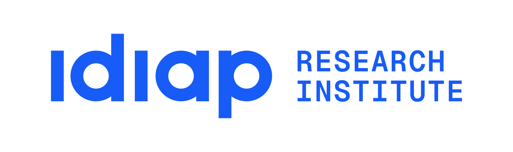
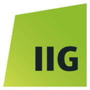
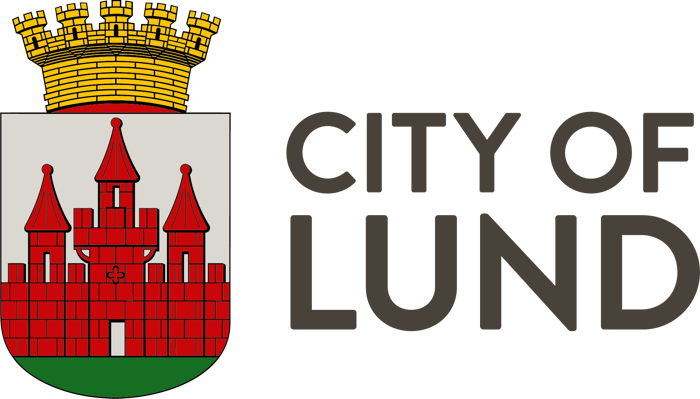

Konsorcjum łączy uczelnie, samorządy, fundację, instytut badawczy i partnerów stowarzyszonych.
- Koordynator
Politechnika Gdańska
Polska
 Partner
PartnerUniwersytet w Lund
Szwecja
 Partner
Partner Partner
PartnerUniwersytet w Innsbrucku
Austria

PartnerIdiap Research Institute
Szwajcaria
 Partner
PartnerUniwersytet Gdański
Polska
- Partner
 Partner
PartnerGmina Kartuzy
Polska
 Partner stowarzyszony
Partner stowarzyszonyFoton-OZE
Polska

Partner stowarzyszony
Partner stowarzyszonyGmina Lund
Szwecja